ノンプログラミングでTwitter投稿を行ってみよう
LEDを光らせるプログラムを書いてみよう
光センサの情報を取得して記録してみよう
https://dotstud.io/docs/nefrybt-ifttt/
IFTTT等のインターネットのサービスとハードウェアを簡単に接続できるIoTデバイス. Wi-Fi / BLE通信モジュール「ESP-WROOM-32」を搭載
LINE, Twitter, Slack など，様々なWebサービス同士を 簡単に連携(レシピと呼ぶ)できるサービス


⑴ IFTTTにレシピを作成 → ⑵ Secret Key を取得
→ ⑶ Nefry BT の設定ページでSecret Key を登録
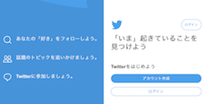
レシピ： if this then that
〇〇 が起きたら △△ する
Nefryのボタンを押し たら IFTTTのWebhooksにアクセス する
[Thisの設定] 「+this」 をクリック

[Thisの設定]webhooksを検索し，webhooksのアイコンをクリック

[Thisの設定]「Receive a web request」 をクリック

[Thisの設定] Event Nameに Nefry_IFTTT と記入し,「Create trigger」をクリック
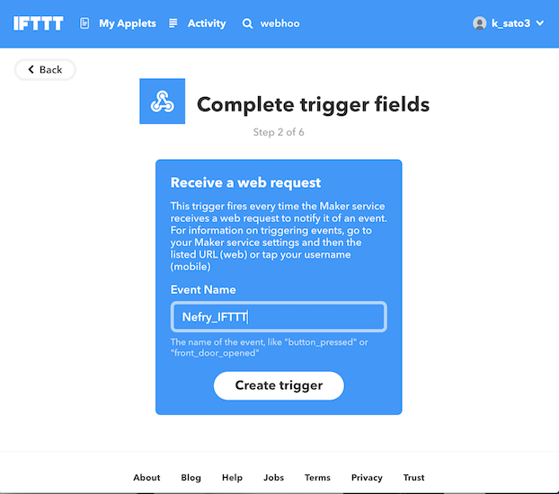
[Thatの設定]「+that」 をクリック
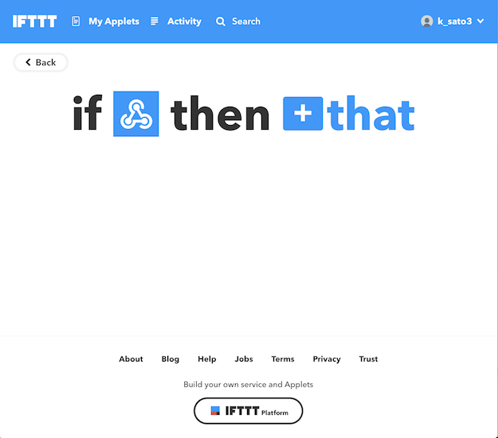
[Thatの設定]twitter を検索し，twitterのアイコンをクリック

[Thatの設定]「Post a tweet」をクリック
[Thatの設定]Tweet text 欄にツイートしたい内容を入力し， (例:【Bot】Nefry BTとIFTTT連携test ) 「Create action」 をクリック
[Thatの設定]「Finish」をクリック
これで, 「Nefryのボタンを押したらIFTTTのWebhooksにアクセスする」レシピの作成完了です．
webhooks で検索

「Services」をクリックし，webhooksのアイコンをクリック
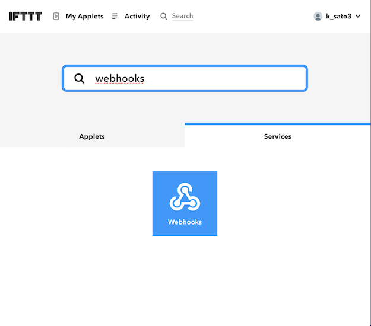
右上の「Settings」をクリック

URLの末尾の自身のSecret Keyをコピー

次に，コピーしたWebhooksの Secret Key を Nefry に登録します．
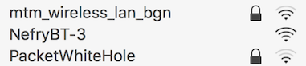
Wi-Fiに接続すると自動で設定ページのウィンドウが立ち上がる． （立ち上がらない場合はブラウザでhttp://192.168.4.1にアクセス）
このページからNefry BTに関する様々な設定が可能．
「Setup WiFi」をクリックし，利用するWi-FiのSSIDとパスワードを入力し，「Save」で保存．

再度，Nefry BTのWi-Fiにつなぎ，トップ画面を開くと， 利用するWi-FiのSSIDとNefry BTのIPアドレスが表示される．
トップ画面から「Data Store」に移動．

先ほど取得したWebhooksの「Secret Key」と「Event Name」を それぞれ入力し，保存．
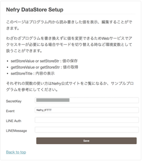
Nefry BTのボタンを押して試してみましょう！
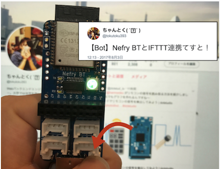
Nefryのボタンを押すとTweetすることができました！ （IFTTTのサーバ状況により送信に時間がかかる場合があります．）
https://dotstud.io/docs/nefrybt-led/
Arduino インストール https://dotstud.io/docs/arduinoide-setup/
Arduino セットアップ https://dotstud.io/docs/nefrybt-arduino-ide-setup/
Arduinoのサイトから自身の環境に合わせたダウンロードリンクを選択．次のページでドネーション（寄付金）を求められますが，特に気にせず「JUST DOWNLOAD」を選択し，インストール．


Arduinoファイルを起動し，下記のような画面が表示されれば起動完了．
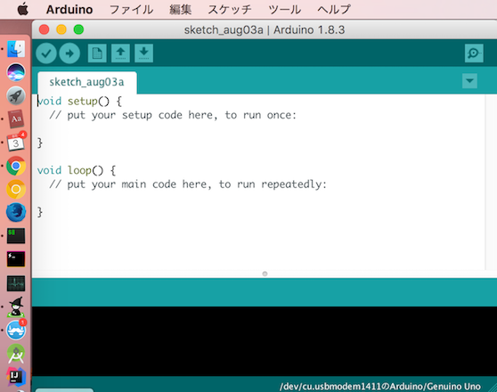
メニューのArduino > Preferencesを選択．追加のボードマネージャのURLのフォームに以下のURLを追加し，OKを選択．
http://nefry.studio/package_nefrybt_index.json

メニューのツール > ボード > ボードマネージャを選択．

フォームにNefryと入力して検索する．
バージョン1.4.0 を選択し，インストールを押す (バージョンは1.2.2以上のものを選択)
メニューのツール > ボード > Nefry BT R2/R3を選択．
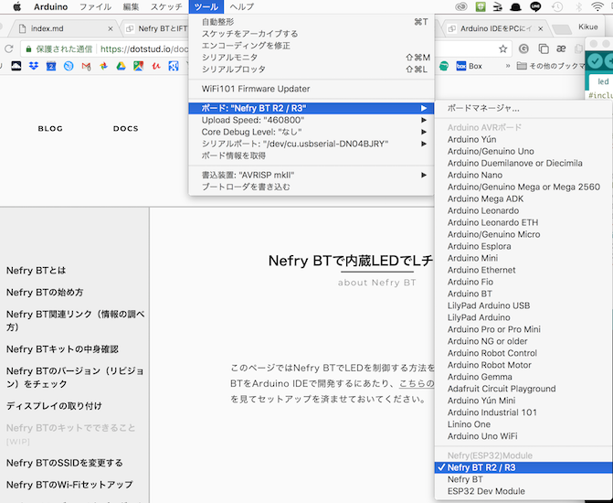
※Windowsだと表記が異なる可能性あり
Arduinoを選択し，メニューのファイル > 新規ファイルを選択．
初期状態で書かれているコードを削除し,以下のコードに差し替える
#include <Nefry.h>
//フルカラーLED ランダムにカラーが変わります．
#define SEED_PIN A0
void setup() {
randomSeed(analogRead(SEED_PIN));
}
int red,green,blue;
void loop() {
red=random(255);//random関数は0-255の数値をランダムに返します．
green=random(255);
blue=random(255);
Nefry.setLed(red,green,blue);//LEDがランダムに点灯します．
String color="Red:";color+=red;
color+=" Green:";color+=green;
color+=" Blue:";color+=blue;
Nefry.ndelay(1000);//1秒待つ
}
※A0を指定していますが，乱数のSeed用に使っているだけで， 内蔵のLEDがA0という訳ではないです．
左上の → ボタンを押し，ボード（Nefry BT）にプログラムを書き込む．
無事にプログラム書き込みが終わると，Nefry BTに内蔵してあるLEDがカラフルに光ります．
※プログラムが書き込めない場合は，設定を以下のように変えてみましょう
ツール > Upload Speed : 460800
Baas（Backend as a Service）の１つ． Webアプリケーションやモバイルアプリケーションのバックエンドで行う機能を提供するクラウドサービス．実装者がバックエンド側の実装をすることなく，決められたAPIを叩くだけでクラウド上に用意された機能群を使うことが出来る．

Nefry BTのA2 と書かれたソケットに光センサを接続する．

Arduinoを起動し，メニューのファイル > 新規ファイルを選択． 新規ファイルに以下のプログラムを書き込み，左上の→ボタンを押し，実行．
#include <Nefry.h>
#define PIN A2
void setup()
{
pinMode(PIN,INPUT);
}
void loop()
{
long sum = 0;
// 32回分の合計をする
for(int i=0; i<32; i++)
{
sum += analogRead(PIN);
}
// 合計を割って平均を取る
sum >>= 5;
Nefry.println(sum);
Nefry.ndelay(10);
}
※注意：同時に2つ開くことはできない
※音センサも同じプログラムで実行可能


4.「Database」を選択し，「Realtime Database」を選択


5.「テストモードで開始」を選択し，「有効にする」をクリック

6.databaseのURLをコピーしておく

#include <Nefry.h>
#include <NefryFireBase.h>
#define PIN A2
#define FIREBASE_HOST "xxxx.firebaseio.com"
NefryFireBase firebase;
void setup()
{
pinMode(PIN,INPUT);
firebase.begin(FIREBASE_HOST);
}
void loop()
{
DataElement elem = DataElement();
elem.setValue("sensor", analogRead(PIN));
firebase.write("Nefry", &elem);//FireBaseのデータを書き込む
Nefry.ndelay(1000);
}

以下のソースコードのdatabaseURLを変更し，htmlページを作成．
<html>
<body>
<p>
<div id="sensor"></div>
</p>
<script src="https://www.gstatic.com/firebasejs/4.12.1/firebase.js"></script>
<script>
var config = {
//apiKey: "nefry-cef61",
//authDomain: "projectId.firebaseapp.com",
databaseURL: "https://xxxx.firebaseio.com", // ここの値を変更する
//storageBucket: "bucket.appspot.com"
};
firebase.initializeApp(config);
var database = firebase.database();
var dataRef = database.ref('/Nefry');
dataRef.once("value")
.then(function (snapshot) {
document.getElementById("sensor").innerHTML = snapshot.child("sensor").val();
});
</script>
</body>
</html>
Command+R or 左上の更新ボタン で更新すると， 光センサの値が確認できる．
光センサ以外のセンサーや出力装置のサンプルコードを紹介
サンプルによってはArduino IDEに外部ライブラリのインストールが必要
参考ページ http://wiki.seeedstudio.com/Sensor/
サーボモータ
光センサ/音センサ/傾きセンサ/水センサ
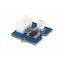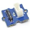
モーションセンサ/温度湿度センサ/LEDbarセンサ
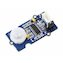
その他→ https://dotstud.io/docs/grove/
http://wiki.seeedstudio.com/Grove-Sound_Sensor/
A0に接続し，下記プログラムを実行．
ツール > シリアルモニタ or シリアルプロットで値を確認できる
const int pinAdc = A0;
void setup()
{
Serial.begin(115200);
}
void loop()
{
long sum = 0;
for(int i=0; i<32; i++)
{
sum += analogRead(pinAdc); //32回計測
}
sum >>= 5; // 平均を算出
Serial.println(sum);
delay(10); //10ms周期で計測
}
#define PIN D2
void setup()
{
Serial.begin(115200);
pinMode(PIN,INPUT);
}
void loop()
{
int v = digitalRead(PIN);
Serial.println(v);
delay(10);
}
ツール > シリアルモニタ or シリアルプロットで値を確認できる
#define PIN D2
void setup()
{
Serial.begin(115200);
pinMode(PIN,INPUT);
}
void loop()
{
if(digitalRead(PIN))//if it detects the moving people?
Serial.println("Hi,people is coming");
else
Serial.println("Watching");
delay(200);
}
#include <Nefry.h> // Nefryのライブラリをインクルード
#define PIN D2
// LEDCのパラメータ設定
#define LEDC_CHANNEL 0 // チャンネル : 0
#define LEDC_RESOLUTION_BITS 10 // 目盛数 : 10bit (0〜1023)
#define LEDC_FREQUENCY 50 //周波数 : 50Hz (= 20ms周期)
// 30/1024*20ms = 0.59ms
// 77/1024*20ms = 1.50ms
// 122/1024*20ms = 2.38ms
uint32_t pulse[3] = {30, 77, 122};
int n = 0;
void setup() {
ledcSetup(LEDC_CHANNEL, LEDC_FREQUENCY, LEDC_RESOLUTION_BITS);
ledcAttachPin(PIN, LEDC_CHANNEL);
Serial.println(pulse[n]);
ledcWrite(0, pulse[n]);
Nefry.enableSW();
}
void loop() {
if (Nefry.readSW()) {
n = (n+1) % 3;
Serial.println(pulse[n]);
ledcWrite(0, pulse[n]);
}
}
以下のライブラリをインストールする
https://github.com/adafruit/Adafruit_Sensor
https://github.com/adafruit/DHT-sensor-library
1.zip形式でダウンロード
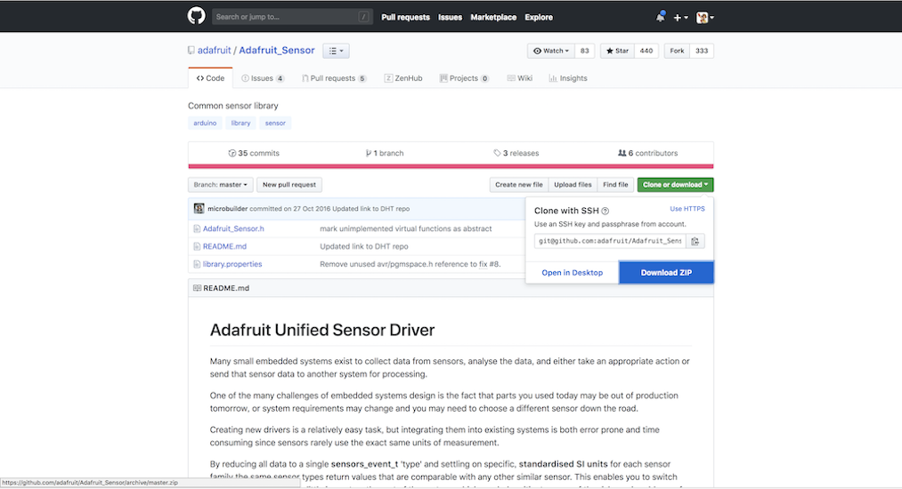
2.Arduino IDEを起動し，スケッチ > ライブラリをインクルード > ZIP形式のライブラリをインストール
 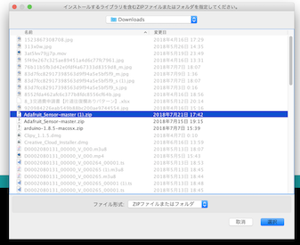
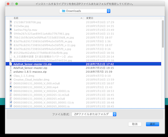
#include <Nefry.h> // Nefryのライブラリをインクルード
#include "DHT.h"
#define DHTPIN D2 // 値をD4に変更（接続するピンに応じて変更）
#define DHTTYPE DHT11 // DHT 11に変更
DHT dht(DHTPIN, DHTTYPE);
void setup() {
//Serial.begin(9600); 削除
Nefry.println("DHTxx test!"); // SerialをNefryへ変更
dht.begin();
}
void loop() {
Nefry.ndelay(2000); // Serial.delayをNefry.ndelayへ変更
float h = dht.readHumidity();
float t = dht.readTemperature();
float f = dht.readTemperature(true);
if (isnan(h) || isnan(t) || isnan(f)) {
Nefry.println("Failed to read from DHT sensor!"); // SerialをNefryへ変更
return;
}
float hif = dht.computeHeatIndex(f, h);
float hic = dht.computeHeatIndex(t, h, false);
Nefry.print("Humidity: "); // SerialをNefryへ変更
Nefry.print(h); // SerialをNefryへ変更
Nefry.print(" %\t"); // SerialをNefryへ変更
Nefry.print("Temperature: "); // SerialをNefryへ変更
Nefry.print(t); // SerialをNefryへ変更
Nefry.print(" *C "); // SerialをNefryへ変更
Nefry.print(f); // SerialをNefryへ変更
Nefry.print(" *F\t"); // SerialをNefryへ変更
Nefry.print("Heat index: "); // SerialをNefryへ変更
Nefry.print(hic); // SerialをNefryへ変更
Nefry.print(" *C "); // SerialをNefryへ変更
Nefry.print(hif); // SerialをNefryへ変更
Nefry.println(" *F"); // SerialをNefryへ変更
}

#include <Grove_LED_Bar.h>
//Clock pin,Data pin, Orientation
Grove_LED_Bar bar(D3, D2, 0);
void setup()
{
// nothing to initialize
bar.begin();
}
void loop()
{
// Walk through the levels
for (int i = 0; i <= 10; i++)
{
bar.setLevel(i);
delay(100);
}
}